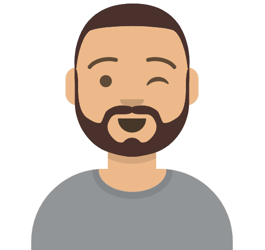

Compétences
Front-end
Création et intégration de sites web et applications mobiles responsive, accessibles et répondant aux normes W3C.
Html5
Css3
Vue.js
JavaScript
Ajax
Back-end
Développement de sites web et applications, création et gestion de bases de données.
API REST
Node.js
Express
SEO
MongoDb
SQL
Sequelize

Nom : Nicolas LEONARDI
Age : 30 ans
Ville actuelle : Clouange (57)
Hobbies : famille, football, web-design, jeux-vidéo, série tv
Etant jeune diplômé en qualité de Développeur Web après avoir effectué ma formation auprès d'OpenClassRooms, je profite aujourd’hui du temps dont je dispose pour continuer d’apprendre de nouvelles technologies et notamment enrichir mes connaissances en développement.
Ayant commencé ma carrière professionnelle dans le secteur du commerce, j’ai choisi de me reconvertir dans le métier de développeur web car j'ai décidé de faire de ma passion mon métier!
Mon expérience commerciale et managériale m'a permis d'acquérir une maturité professionnelle notamment dans la relation client, la gestion de projets et le travail d'équipe. Touche à tout, et doté d'un bon sens de l'écoute je suis en mesure d’aborder le développement front-end avec sérénité, même lorsque je ne dispose pas de maquette ou de directives précises.
Autonome de nature, je peux travailler seule ou en groupe, étant également capable de m’adapter à un environnement que je ne connais pas. Je sais faire preuve de force de proposition lorsque l’on m’en donne la liberté, cherchant toujours à améliorer et optimiser les projets au maximum pour satisfaire au mieux la demande du client. L’optimisation du code fait partie de mes priorités.
Retrouvez tous mes projets ci-dessous ainsi que mon CV et n'hésitez pas à me contacter !
Réalisations
Création d'un réseau social d'entreprise
Réalisation du Front et d'une Api pour un réseau social d'entreprise. Création/suppression de compte, connexion/déconnexion, ajout/suppression de posts et commentaires avec ou sans contenu multimédia, page admin font partie des options disponibles.
Création d'une Api pour une application d'avis gastronomiques
Inscription, connexion, Ajout/modification/suppression de produits, système de like (le front-end était déjà créé)
Amélioration Seo / Accessibilité d'un site existant
Le site recontré les problèmes suivant: mauvais référencement,
problème d'accesibilité + vitesse de chargment des pages web,
ainsi qu'un mauvais confort de navigation.
Avec le code
source est également présent un rapport complet des mes
interventions.
Construction d'un site e-commerce
Il s'agit d'un MVP (Produit Minimum Viable) d'une application
thématique ne vendant qu'un seul type de produits (ici des ours en
peluche) ; la partie back-end est fournie et l'objectif est de
créer la partie front-end par la consommation d'une API fournie.
Aucune maquette n'est fournie, et aucune gestion réelle de
transactions n'est effectuée.
Création d'un site web pour avec des animations CSS
Il s'agit d'un site web contenant des animations css fait
entièrement sans frameworks et utilisant le scss.
Ce site à
été créé à partir d'une maquette des pages et un cahier des
charges expliquant les animations à appliquer, chaque restaurant à
son propre menu qui apparaîtra dynamiquement.
Création d'une page web à partir d'un design proposé par un client
L'objectif est d'intégrer une maquette de site de réservation de chambres d'hôtes en HTML 5 et CSS 3.
Contactez-moi!
Actuellement à la recherche d'un nouvel emploi, je suis intéressé par les postes de :
Développeur full-stack • Développeur front-end
+33 6 43 07 36 40